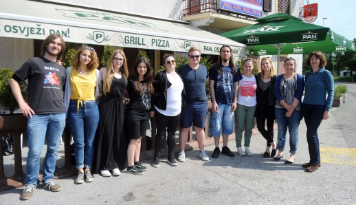

Dvanaest studenata etnologije iz Zagreba predstavit će u listopadu rezultate istraživanja o tome kakva su sela Vele i Male Mune i Žejane bila nekada, a kakva su danas i što se od nekada sačuvalo do danas
Mune, Žejane - Dvanaest studenata etnologije Filozofskog fakulteta Sveučilišta u Zagrebu i mentorica prof. dr. sc. Nevena Škrbić Alempijević, pročelnica Odsjeka za etnologiju Filozofskog fakulteta i njezina kolegica Jadranka Grbić, posljednjih pet dana proveli su u terenskom istraživanju u Munama i Žejanama. Istraživali su tradicijsku glazbu i glazbala, narodna vjerovanja, jezičnu situaciju u Velim i Malim Munama, migracije u inozemstvo i urbane centre, potencijale za turistički razvoj tog dijela matuljske općine, ulogu folklora u životu i turizmu, društveno sjećanje na antifašističku borbu i Drugi svjetski rat, utjecaj rada udruga na lokalnu zajednicu i identitet i usmenu književnost.
Nekada i danas
Istraživanje ovog tipa prvo je na području triju sela (Velih i Malih Muna i Žejana), istaknula je mentorica naglasivši kako je ono rezultat suradnje Udruge "Žejane" i Udruge "Mladi Mune" s Klubom studenata etnologije i kulturne antropologije FF Zagreb (KSEKA).

Fokus istraživanja bio je na Munama i Žejanama. Istovremeno smo se bavili i tradicijskom i suvremenom kulturom. Bilo nam je zanimljivo zabilježiti način na koji su ljudi na ovom području živjeli u prošlosti, i kakva im je svakodnevnica danas. Proučavali smo kako kreiraju, prezentiraju svoj identitet, na koji način bi voljeli da ih drugi vide, kako sami osmišljavaju turističku promidžbu. Istraživali smo odnos govora i identiteta, zanimalo nas je kako ljudi govor koriste da bi predstavi svoj identitet, na koji način ga čuvaju, obnavljaju njeguju i slično. U suradnji s Robertom Doričićem, predsjednikom žejanske udruge, uvidjeli smo kako se govor prenosi mlađim naraštajima, rekla je Nevena Škrbić Alempijević.
Sudionici istraživanja popratili su i radionicu Žejančići na kojoj djeca uče jezik na interaktivan način.
Čuvaju tradiciju
Studenti su se bavili i munskim narječjem koji se u odnosu na žejanski nekako uvijek stavlja u drugi plan. Sami Munci kažu da on nije ništa posebno – samo munski, ali mi ne mislimo tako. Mislimo da je svaki govor poseban i da ga valja čuvati, kaže Nevena Škrbić Alempijević, dodajući da su tema bile i migracije budući da je emigracija jako obilježila te lokalitete, ali i čitav ovaj prostor.
Nas su zanimale, a to su i naši zaključci, neke veze koje se ostvaruju i nakon što ljudi isele. Uočili smo da oni koji isele djelomice i ostaju tu, ako ne fizički, onda su barem simbolički upisani u taj prostor. Ostvaruju neke veze, komunikaciju sa zajednicom, donose nešto nazad i slično. Mislim da su veze dosta jake, koliko je to moguće do određenog trena. Recimo treća, četvrta generacija možda više ne zna jezik, ali budu prisutni na način da obnove i održavaju kuće. U odnosu na druge krajeve, žejanski je jezik u puno boljem stanju nego što je bio do prije deset godina, baš zahvaljujući naporima udruge. Ljudi su svjesni posebnosti jezika i da ga trebaju čuvati, zaključuje, najavivši povratak u listopadu kada će biti prezentirani kompletni rezultati njihovog petodnevnog istraživanja u matuljskim selima.
Marina Kirigin
June 15, 2015
© 2015 Novi List